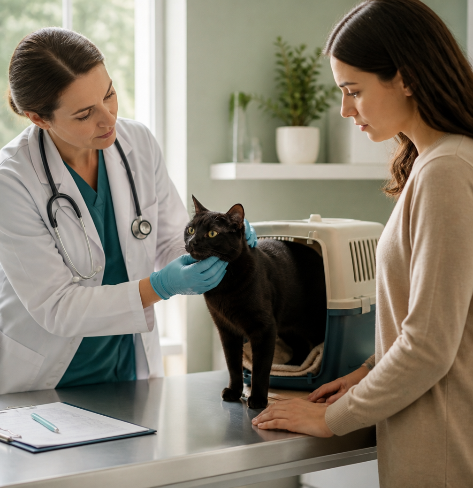
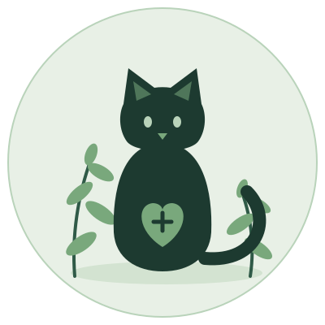
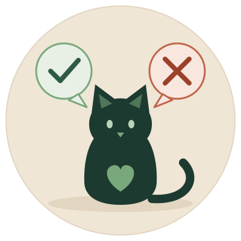

GUIA EDUCATIVO PARA TUTORES
MEU GATO TEM ESPOROTRICOSE, E AGORA?
Orientações práticas para você cuidar do seu animal com mais segurança, reduzir riscos em casa e acompanhar o tratamento com tranquilidade.

Cuidar com informação faz toda a diferença.
Entenda a doença. Proteja seu gato. Cuide de quem está ao seu redor.
A esporotricose pode gerar muitas dúvidas e preocupações. Saber reconhecer os sinais, entender os cuidados necessários e conhecer as formas de prevenção faz diferença na rotina de quem convive com um animal infectado.
O SporoCare reúne informações científicas em orientações simples e acessíveis para ajudar você a compreender a doença e cuidar do seu gato com mais segurança.
Conteúdo educativo baseado em fontes científicas. Não substitui a avaliação veterinária.
Escolha por onde começar
Seis passos para organizar o cuidado em casa. Você pode seguir a ordem ou ir direto ao que precisa agora.
-
01
Cuidados
Proteja você e sua família durante o manejo do gato.
Ver seção -
02
Manejo de lesões
O que fazer e o que evitar ao cuidar da ferida.
Ver seção -
03
Administração de medicações
Regularidade e atenção para o tratamento dar certo.
Ver seção -
04
Contenção segura
Menos estresse para o animal e mais segurança para você.
Ver seção -
05
Isolamento domiciliar
Como preparar um espaço exclusivo para o seu gato.
Ver seção -
06
Sinais de alerta
Quando parar e procurar o veterinário.
Ver seção

Cuidados · Biossegurança em casa
Proteja você e o seu gato
O contato com gatos infectados é uma importante via de transmissão zoonótica da esporotricose. Durante o manejo de animais suspeitos ou diagnosticados, devem ser adotadas medidas de proteção.
- Luvas
- Lavar as mãos
- Materiais separados
Checklist de cinco hábitos
Referências: Lloret et al. (2013); Gremião et al. (2021); Montenegro et al. (2014). Ver lista

Lesões · Manejo das lesões
Cuide da ferida sem improvisar
As lesões da esporotricose podem apresentar ulceração e secreção. O manejo deve seguir exatamente a orientação do veterinário responsável.
Faça
- Use os materiais e produtos indicados pelo veterinário.
- Mantenha o ambiente organizado e use luvas.
- Observe as lesões e relate qualquer mudança ao veterinário.
Não faça
- Não aplique produtos caseiros, pomadas ou antissépticos por conta própria.
- Não remova crostas nem esprema lesões.
- Não mude a frequência de limpeza sem orientação.
Importante: não tente remover crostas, espremer lesões ou modificar a frequência de limpeza sem orientação profissional.
Referências: Gremião et al. (2021); Lloret et al. (2013). Ver lista

Medicação
O tratamento precisa de regularidade
A adesão do tutor ao tratamento é um dos fatores importantes para o sucesso terapêutico. O medicamento, a dose, o intervalo e a duração devem ser definidos pelo médico-veterinário.
Siga a prescrição veterinária e não interrompa o tratamento sem orientação, mesmo que o gato pareça melhor.
Siga a prescrição
Administre exatamente como foi orientado.
Facilite a rotina
Use alarmes e mantenha um registro dos horários.
Observe o animal
Se notar reação inesperada, entre em contato com o veterinário.
Não interrompa sozinho
Mesmo que as lesões melhorem, não pare o tratamento sem orientação.
Se o gato cuspir ou vomitar a medicação: não repita a dose por conta própria. Entre em contato com o veterinário para saber como proceder.
Referências: Lloret et al. (2013); Gremião et al. (2021). Ver lista

Contenção
Menos estresse, mais segurança
Quando o veterinário orientar a manipulação em casa, um cobertor ou toalha pode ajudar a limitar movimentos e proteger o tutor e o animal.
Checklist de quatro práticas
Referências: Lloret et al. (2013); Gremião et al. (2021). Ver lista
Vídeos educativos sobre contenção e manejo
Materiais de terceiros hospedados no YouTube. Eles complementam, mas não substituem, as orientações escritas acima nem a conduta indicada pelo seu veterinário.
Se o vídeo não carregar aqui (a incorporação pode ser bloqueada pelo YouTube ou pelo ambiente em que o site é aberto), use o link “Assistir no YouTube” abaixo de cada vídeo.
Referências de manejo: Lloret et al. (2013); Gremião et al. (2021). Ver lista

Isolamento domiciliar
Prepare um espaço exclusivo
O isolamento ajuda a reduzir oportunidades de contato do animal infectado com pessoas e outros animais. O período e as condições do isolamento devem ser definidos pelo veterinário.
Checklist de cinco cuidados
Referências: Lloret et al. (2013); Gremião et al. (2021). Ver lista
Sinais de alerta
Quando procurar o veterinário?
Saiba identificar sinais de alerta.
Observe a evolução do seu animal durante o tratamento. O aparecimento de novos sintomas ou a piora dos sinais existentes pode indicar a necessidade de uma reavaliação veterinária.
Clique nos itens para visualizar as orientações.
Lesões novas ou qualquer alteração nas lesões existentes devem ser avaliadas pelo médico-veterinário. Não manipule, limpe ou trate as feridas por conta própria.
Alterações preocupantes no estado geral do gato podem indicar agravamento do quadro e justificam contato com o veterinário.
Observe mudanças na alimentação, disposição e comportamento. Informe ao profissional quando essas alterações surgirem ou persistirem.
Se perceber alguma reação diferente após a administração dos medicamentos, entre em contato com o médico-veterinário responsável. Não altere a medicação por conta própria.
Se estiver com dificuldades para administrar os medicamentos, dúvidas sobre os cuidados ou problemas para seguir as orientações, converse com o profissional responsável.
O acompanhamento veterinário é essencial durante todo o tratamento.
Referências: Lloret et al. (2013); Gremião et al. (2021). Ver lista
Cuidado com o tutor
E se você for arranhado ou mordido?
Sua saúde também precisa de atenção.
Se você sofrer uma mordida ou arranhadura de um animal com suspeita ou diagnóstico de esporotricose, procure orientação em um serviço de saúde.
-
Lave bem a região atingida com água corrente e sabão. Não tente tratar a lesão por conta própria.
-
Dirija-se à UBS ou à unidade de saúde mais próxima para avaliação profissional, mesmo que o ferimento pareça pequeno. Informe que teve contato com um animal com suspeita ou diagnóstico de esporotricose.
-
Solicite orientações sobre o animal e informe o ocorrido. A equipe poderá orientar sobre os procedimentos adequados.
Contatos na região de Campinas
Vigilância em Zoonoses
Telefone(19) 3883-7486
Os contatos são municipais. Se você mora em outra cidade da região, procure a Vigilância de Zoonoses do seu município.
Não espere os sintomas aparecerem para buscar orientação.
Prevenção
Prevenir também é cuidar
Pequenas atitudes ajudam a proteger seu gato, sua família e o ambiente.
A prevenção da esporotricose começa com informação e cuidados diários. Conhecer os riscos e adotar atitudes responsáveis ajuda a reduzir a exposição ao fungo e proteger todos ao nosso redor.

Etapa 1 de 5
Etapa 1 — Proteja seu gato
Um ambiente seguro faz a diferença
Gatos com livre acesso à rua podem entrar em contato com ambientes contaminados pelo fungo. Manter o animal em ambiente doméstico protegido é uma medida importante de prevenção.
Orientação
Manter o gato em ambiente doméstico protegido, sem livre acesso à rua, reduz a exposição a ambientes potencialmente contaminados e também ajuda a prevenir outros riscos.
A guarda responsável, com acompanhamento veterinário regular, e o enriquecimento ambiental, como arranhadores, prateleiras, brinquedos e janelas protegidas com tela, ajudam o gato a viver bem dentro de casa. Se ele está acostumado a sair, a mudança pode ser gradual, e o veterinário pode orientar esse processo.
Etapa 2 — Proteja você
Cuidado também é prevenção
O fungo também pode estar presente no solo, em plantas e em matéria orgânica. Algumas atividades exigem cuidados para reduzir o contato direto com materiais potencialmente contaminados.
Orientação
Ao realizar jardinagem ou manusear terra, plantas, espinhos e materiais orgânicos, utilize luvas e roupas que protejam a pele. Em atividades rurais, utilize também calçados adequados. Lave as mãos após essas atividades.
Etapa 3 — Cuide do ambiente
Um ambiente limpo e seguro
Os cuidados com os espaços frequentados pelos animais também fazem parte da prevenção.
Orientação
Mantenha os espaços limpos, evite o acúmulo de matéria orgânica em decomposição e higienize regularmente os objetos utilizados pelo animal.
Etapa 4 — Saiba identificar e agir
Não ignore os sinais de alerta
Reconhecer alterações na saúde do animal e procurar orientação profissional precocemente é fundamental.
Orientação
Feridas suspeitas, especialmente quando persistentes, precisam de avaliação veterinária. Não manipule as lesões, não aplique pomadas e não administre medicamentos por conta própria.
Se houver suspeita de esporotricose, entre em contato com o serviço veterinário ou a Vigilância de Zoonoses do município para receber orientações.
Etapa 5 — Proteção durante o tratamento
Cuidar também é responsabilidade
Se um animal apresentar suspeita ou diagnóstico de esporotricose, alguns cuidados específicos são necessários para proteger o próprio gato, as pessoas e outros animais.
Orientação
O animal precisa de avaliação veterinária e, quando indicado, tratamento acompanhado por profissional. Siga as orientações sobre isolamento em local seguro, proteção individual durante os cuidados e higienização do ambiente e dos objetos.
O animal não deve ser abandonado. O tratamento e o acompanhamento veterinário são fundamentais.
Você faz parte dessa prevenção!
Agora você conhece algumas atitudes importantes para reduzir os riscos da esporotricose. Compartilhar informações corretas e praticar a guarda responsável também são formas de proteger a saúde animal, humana e ambiental.
Uma só saúde. Um compromisso de todos.
Desafio educativo
Mitos ou verdades?
Será que você sabe tudo sobre a esporotricose?
Existem muitas informações sobre a esporotricose circulando por aí, mas nem todas estão corretas. Teste seus conhecimentos e descubra o que é mito e o que é verdade sobre essa doença.

Pergunta 1 de 8
Afirmação 1
A esporotricose é causada por um fungo.
A esporotricose é uma infecção causada por fungos do gênero Sporothrix. Esses fungos podem estar presentes no ambiente e também causar infecção em animais e seres humanos.
Afirmação 2
Somente gatos podem transmitir a esporotricose.
Os gatos são importantes transmissores da esporotricose zoonótica no Brasil, mas outros animais também podem ser acometidos pela doença. O fungo também pode infectar pessoas por exposição ambiental, como contato com solo, plantas e materiais orgânicos contaminados.
Afirmação 3
O fungo pode estar presente no solo e em matéria vegetal.
O fungo pode ser encontrado no solo rico em matéria orgânica, em vegetais em decomposição, espinhos e madeira. Por isso, atividades de jardinagem e manuseio de terra exigem cuidados de proteção.
Afirmação 4
A esporotricose pode atingir seres humanos.
A doença também pode afetar pessoas. A transmissão pode ocorrer por arranhaduras, mordidas e contato com lesões ou secreções de animais infectados, além da exposição ao fungo presente no ambiente.
Afirmação 5
Todo gato que apresenta feridas na pele tem esporotricose.
Existem diversas causas possíveis para feridas na pele dos gatos. A esporotricose é uma possibilidade, mas somente a avaliação veterinária e os exames indicados podem auxiliar na confirmação do diagnóstico.
Afirmação 6
Um gato com esporotricose deve ser abandonado para evitar a contaminação.
O abandono não é uma solução e pode contribuir para a disseminação da doença. O animal precisa receber avaliação veterinária, tratamento adequado e cuidados para reduzir o risco de transmissão.
Afirmação 7
Arranhaduras e mordidas de animais infectados podem transmitir o fungo.
A transmissão pode acontecer quando o fungo presente nas lesões ou secreções do animal entra em contato com a pele lesionada ou mucosas. Por isso, é importante evitar o contato desprotegido com lesões suspeitas.
Afirmação 8
A esporotricose tem tratamento e o animal não deve ser abandonado.
A esporotricose animal pode ser tratada com acompanhamento médico-veterinário. O tratamento deve seguir as orientações do profissional, e o animal precisa receber os cuidados necessários durante todo o processo.
Desafio concluído!
Você acertou 0 de 8 perguntas.
Informação também é uma forma de prevenção. Agora você conhece melhor a esporotricose e pode ajudar a combater mitos e compartilhar informações corretas.
Perguntas frequentes
Dúvidas comuns dos tutores
Sim. O contato com gatos infectados é uma importante via de transmissão zoonótica da esporotricose. Por isso, use luvas ao ter contato com lesões, secreções ou materiais potencialmente contaminados, evite mordidas e arranhaduras e lave bem as mãos depois. Se ocorrer mordida ou arranhadura, procure um serviço de saúde.
Não. Mesmo que as lesões melhorem, não interrompa o tratamento sem orientação do veterinário. O medicamento, a dose, o intervalo e a duração são definidos por ele.
Não. Não aplique produtos caseiros, pomadas ou antissépticos por conta própria. Use somente os materiais e produtos indicados pelo veterinário e relate qualquer mudança nas lesões.
Não repita a dose por conta própria. Entre em contato com o veterinário para saber como proceder.
Este guia não define um prazo. O período e as condições do isolamento devem ser estabelecidos pelo veterinário responsável pelo caso, e não devem ser alterados sem a orientação dele.
Pare e peça orientação ao veterinário. Evite perseguir o animal pela casa: prepare o ambiente antes de começar, faça movimentos calmos e nunca aperte o tórax ou dificulte a respiração.
Orientações gerais de manejo e prevenção fundamentadas nas diretrizes: Lloret et al. (2013); Gremião et al. (2021). Ver lista
Este guia não substitui o veterinário.
O diagnóstico, a prescrição, o acompanhamento do tratamento e a definição das condutas para cada animal devem ser realizados pelo médico-veterinário.
QUANDO PROCURAR AJUDAQuem nós somos
A equipe por trás do SporoCare
Um projeto que conecta saúde animal, humana e ambiental.
O SporoCare nasceu da importância de olhar para a esporotricose além da doença, reconhecendo sua relação com a saúde pública e o ambiente em que vivemos.
Inspirado no conceito de Saúde Única (One Health), o projeto busca aproximar a medicina veterinária da comunidade, valorizando a informação, a responsabilidade coletiva e o bem-estar de todos.
A SporoCare é formada por seis alunas do sexto semestre de Medicina Veterinária da PUC-Campinas.
O site foi desenvolvido como parte de um projeto integrador, com o objetivo de oferecer informações educativas e apoio aos tutores de gatos durante o tratamento da esporotricose.
Parceiro oficial
Hospital Veterinário É o Bicho (abre o site oficial em nova aba)Hospital Veterinário É o Bicho
Site oficial: hveobicho.com.brSeja nosso parceiro!
Se você é tutor, profissional, instituição ou organização e quer conhecer ou apoiar o projeto educativo SporoCare, será um prazer conversar com você. Juntos, podemos levar informação acessível a mais famílias.
QUERO SER PARCEIRO (abre o WhatsApp em nova aba)Referências científicas
Fontes utilizadas na elaboração do guia, em ordem alfabética (ABNT)
-
ALMEIDA-SILVA, Fernando et al. Beyond domestic cats: environmental detection of Sporothrix brasiliensis DNA in a hyperendemic area of sporotrichosis in Rio de Janeiro State, Brazil. Journal of Fungi, v. 8, n. 6, art. 604, 2022. DOI: https://doi.org/10.3390/jof8060604.
-
CENTERS FOR DISEASE CONTROL AND PREVENTION (CDC). Sporotrichosis. [S. l.], [s. d.].
-
CONSELHO REGIONAL DE MEDICINA VETERINÁRIA DO ESTADO DE MINAS GERAIS (CRMV-MG). Material informativo sobre esporotricose. [S. l.]: CRMV-MG, [s. d.].
-
CONSELHO REGIONAL DE MEDICINA VETERINÁRIA DO ESTADO DO PARANÁ (CRMV-PR). Guia sobre esporotricose felina para a rotina clínica. [S. l.]: CRMV-PR, [s. d.].
-
FEITOSA, Liana. Com casos em MS, saiba como se proteger da esporotricose, infecção grave que causa feridas. Midiamax, 1 dez. 2025.
-
GIMENEZ, Caio Fernando Monteiro. Diagnóstico citológico da esporotricose cutânea felina. CVAP – Centro Veterinário de Anatomia Patológica, 30 nov. 2020.
-
GREMIÃO, Isabella Dib Ferreira et al. Guideline for the management of feline sporotrichosis caused by Sporothrix brasiliensis and literature revision. Brazilian Journal of Microbiology, v. 52, n. 1, p. 107–124, 2021. DOI: https://doi.org/10.1007/s42770-020-00365-3.
-
LLORET, A. et al. Sporotrichosis in cats: ABCD guidelines on prevention and management (European Advisory Board on Cat Diseases – ABCD). Journal of Feline Medicine and Surgery, v. 15, n. 7, p. 619–623, 2013. DOI: https://doi.org/10.1177/1098612X13489225.
-
MACEIÓ (Município). Esporotricose: Unidade de Vigilância de Zoonoses reforça os cuidados contra a doença. Prefeitura de Maceió, 12 nov. 2022.
-
MONTENEGRO, H. et al. Feline sporotrichosis due to Sporothrix brasiliensis: an emerging animal infection in São Paulo, Brazil. BMC Veterinary Research, v. 10, art. 269, 2014. DOI: https://doi.org/10.1186/s12917-014-0269-5.
-
RODRIGUES, D. K. B.; MALTA, E. D. V. M.; FERRO, L. O. Análise do conhecimento sobre as principais zoonoses transmitidas por gatos. Cadernos Ibero-Americanos de Direito Sanitário, v. 6, p. 742–752, 2017.